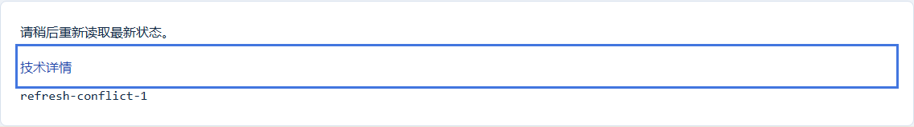
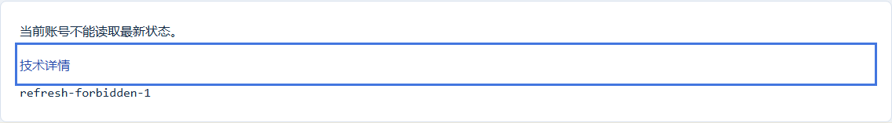
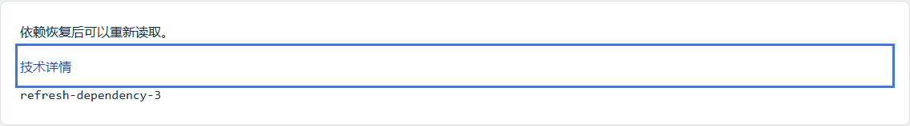
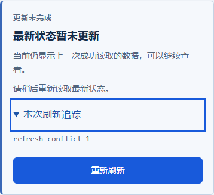
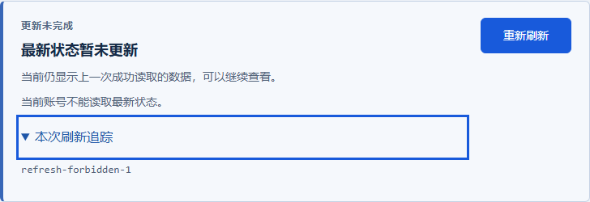
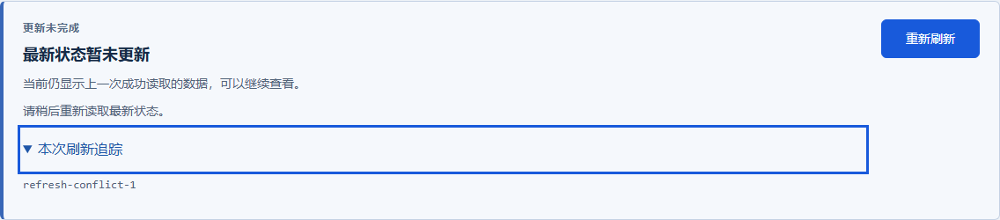
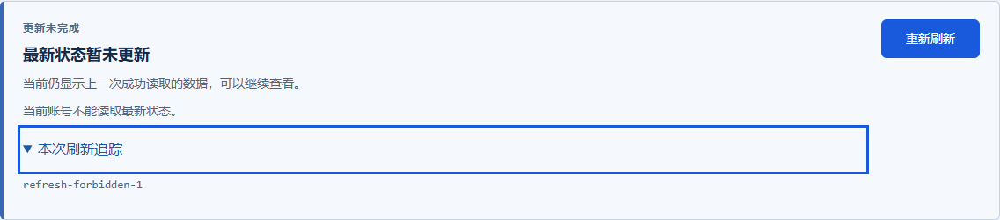

P47 刷新失败保留旧目录 · 独立审核稿
实际Vue，本地409/403/503和随后成功重试。提案将失败放在筛选后、目录前；生产未改。图片不代表真实权限、依赖或整页验收。
baseline / 390 / conflict / failure
baseline / 390 / conflict / trace
baseline / 390 / conflict / retry-pending
baseline / 390 / forbidden / failure
baseline / 390 / forbidden / trace
baseline / 390 / forbidden / retry-pending

baseline / 390 / dependency / failure
baseline / 390 / dependency / trace
baseline / 390 / dependency / retry-pending
baseline / 760 / conflict / failure
baseline / 760 / conflict / trace
baseline / 760 / conflict / retry-pending

baseline / 760 / forbidden / failure
baseline / 760 / forbidden / trace
baseline / 760 / forbidden / retry-pending
baseline / 760 / dependency / failure
baseline / 760 / dependency / trace
baseline / 760 / dependency / retry-pending

baseline / 1440 / conflict / failure
baseline / 1440 / conflict / trace

baseline / 1440 / conflict / retry-pending

baseline / 1440 / forbidden / failure
baseline / 1440 / forbidden / trace

baseline / 1440 / forbidden / retry-pending

baseline / 1440 / dependency / failure
baseline / 1440 / dependency / trace

baseline / 1440 / dependency / retry-pending
review / 390 / conflict / failure
review / 390 / conflict / trace

review / 390 / conflict / retry-pending
review / 390 / forbidden / failure
review / 390 / forbidden / trace
review / 390 / forbidden / retry-pending

review / 390 / dependency / failure
review / 390 / dependency / trace
review / 390 / dependency / retry-pending

review / 760 / conflict / failure
review / 760 / conflict / trace
review / 760 / conflict / retry-pending

review / 760 / forbidden / failure
review / 760 / forbidden / trace

review / 760 / forbidden / retry-pending

review / 760 / dependency / failure
review / 760 / dependency / trace
review / 760 / dependency / retry-pending

review / 1440 / conflict / failure
review / 1440 / conflict / trace

review / 1440 / conflict / retry-pending

review / 1440 / forbidden / failure
review / 1440 / forbidden / trace

review / 1440 / forbidden / retry-pending

review / 1440 / dependency / failure
review / 1440 / dependency / trace
review / 1440 / dependency / retry-pending